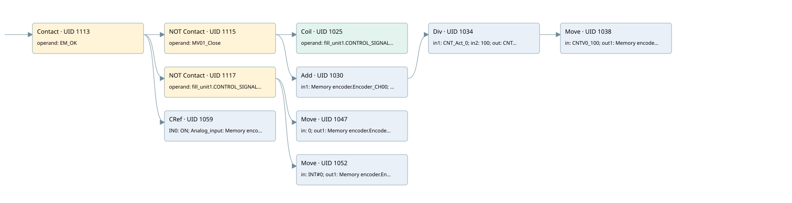

data management mv01
analog input conversion · 검색 색인 순서 32 · 원본 내부 NID 추정 31
백업 PLF 원본의 3144592 바이트 위치에서 복원한 XML. 검색 문서 1762의 객체 키 161022002e6b000000000000와 연결했다. 이름 해석 22/22개. 남은 RefId는 상수 또는 미해석 참조다.
연결 구조 다시 그리기
원본 Part/PCon/Wire를 이용한 연결도다. TIA 화면의 래더 배치 또는 실행 결과를 재현한 그림은 아니다. 핀 연결은 아래 표와 원본 XML을 기준으로 읽는다. 노드 위에 마우스를 두면 피연산자 이름을 볼 수 있다.

접점·코일·블록과 피연산자
| Part UID | Gate | Negated 핀 | 연결 피연산자 |
|---|---|---|---|
| 1113 | Contact | operand = EM_OK | |
| 1115 | Contact | operand | operand = MV01_Close |
| 1025 | Coil | operand = fill_unit1.CONTROL_SIGNALS.SW_GATE0 | |
| 1030 | Add | in1 = Memory encoder.Encoder_CH00; in2 = fill_unit1.ACT_CNTV0; out = CNT_Act_0 | |
| 1034 | Div | in1 = CNT_Act_0; in2 = 100; out = CNTV0_100 | |
| 1038 | Move | in = CNTV0_100; out1 = Memory encoder.Encoder_CH00_10 | |
| 1117 | Contact | operand | operand = fill_unit1.CONTROL_SIGNALS.SW_GATE0 |
| 1047 | Move | in = 0; out1 = Memory encoder.Encoder_CH00_10 | |
| 1052 | Move | in = INT#0; out1 = Memory encoder.Encoder_CH00 | |
| 1059 | CRef | 호출 참조: Signal linearization; IN0 = ON; Analog_input = Memory encoder.Encoder_CH00_10; Coeff = Coeff.COEFF_TRASM_MV01; Zero = Coeff.ZERO_TRASM_MV01; OutValue = Data.Pot_MV01; Out_of_range = Allarm.Pot_MV01_OFR |
접점 경로를 펼친 조건식
Contact·O/A·비교기의 원본 연결을 읽기 쉽게 펼친 보조 해석이다. POWER는 전원 레일 시작을 뜻한다. 호출 블록·에지·타이머의 내부 동작과 다중 쓰기 순서는 이 표로 실행 검증하지 않았다. 미해석 핀과 RefId는 원문 연결표에서 확인한다.
| UID | 동작 | 대상 | 원본 접점 경로 | 내용 |
|---|---|---|---|---|
| 1025 | Coil | fill_unit1.CONTROL_SIGNALS.SW_GATE0 | (EM_OK AND NOT [MV01_Close]) | 조건에 따른 Coil 기록 |
| 1038 | Move | Memory encoder.Encoder_CH00_10 | Div UID 1034.eno (블록 동작 확인) | Move 입력 CNTV0_100 |
| 1047 | Move | Memory encoder.Encoder_CH00_10 | (EM_OK AND NOT [fill_unit1.CONTROL_SIGNALS.SW_GATE0]) | Move 입력 0 |
| 1052 | Move | Memory encoder.Encoder_CH00 | (EM_OK AND NOT [fill_unit1.CONTROL_SIGNALS.SW_GATE0]) | Move 입력 INT#0 |
원본 배선 연결
| Wire UID | 동일 Wire 연결 끝점 |
|---|---|
| 1119 | Powerrail {} ↔ Part 1113.in |
| 1087 | ORef 1064 (EM_OK) ↔ Part 1113.operand |
| 1114 | Part 1113.out ↔ Part 1115.in ↔ Part 1117.in ↔ Part 1059.en |
| 1088 | ORef 1065 (MV01_Close) ↔ Part 1115.operand |
| 1116 | Part 1115.out ↔ Part 1025.in ↔ Part 1030.en |
| 1089 | ORef 1066 (fill_unit1.CONTROL_SIGNALS.SW_GATE0) ↔ Part 1025.operand |
| 1090 | ORef 1067 (Memory encoder.Encoder_CH00) ↔ Part 1030.in1 |
| 1091 | ORef 1068 (fill_unit1.ACT_CNTV0) ↔ Part 1030.in2 |
| 1093 | Part 1030.eno ↔ Part 1034.en |
| 1092 | Part 1030.out ↔ ORef 1069 (CNT_Act_0) |
| 1094 | ORef 1070 (CNT_Act_0) ↔ Part 1034.in1 |
| 1095 | ORef 1071 (100) ↔ Part 1034.in2 |
| 1097 | Part 1034.eno ↔ Part 1038.en |
| 1096 | Part 1034.out ↔ ORef 1072 (CNTV0_100) |
| 1098 | ORef 1073 (CNTV0_100) ↔ Part 1038.in |
| 1099 | Part 1038.out1 ↔ ORef 1074 (Memory encoder.Encoder_CH00_10) |
| 1101 | ORef 1075 (fill_unit1.CONTROL_SIGNALS.SW_GATE0) ↔ Part 1117.operand |
| 1118 | Part 1117.out ↔ Part 1047.en ↔ Part 1052.en |
| 1102 | ORef 1076 (0) ↔ Part 1047.in |
| 1103 | Part 1047.out1 ↔ ORef 1077 (Memory encoder.Encoder_CH00_10) |
| 1104 | ORef 1078 (INT#0) ↔ Part 1052.in |
| 1105 | Part 1052.out1 ↔ ORef 1079 (Memory encoder.Encoder_CH00) |
| 1107 | ORef 1081 (ON) ↔ Part 1059.IN0 |
| 1108 | ORef 1082 (Memory encoder.Encoder_CH00_10) ↔ Part 1059.Analog_input |
| 1109 | ORef 1083 (Coeff.COEFF_TRASM_MV01) ↔ Part 1059.Coeff |
| 1110 | ORef 1084 (Coeff.ZERO_TRASM_MV01) ↔ Part 1059.Zero |
| 1111 | Part 1059.OutValue ↔ ORef 1085 (Data.Pot_MV01) |
| 24 | Part 1059.Out_of_range ↔ ORef 23 (Allarm.Pot_MV01_OFR) |
식별자 해석 근거 22개
| ORef UID | RefId | 이름 | IdentXmlPart 파일 | 해석 방법 |
|---|---|---|---|---|
| 1064 | 173 | EM_OK | 0678-IdentXmlPart.xml | UID/RID + search-text + NID agreement |
| 1065 | 205 | MV01_Close | 0678-IdentXmlPart.xml | UID/RID + search-text + NID agreement |
| 1066 | 207 | fill_unit1.CONTROL_SIGNALS.SW_GATE0 | 0676-IdentXmlPart.xml | UID/RID + search-text + NID agreement |
| 1067 | 192 | Memory encoder.Encoder_CH00 | 0676-IdentXmlPart.xml | UID/RID + search-text + NID agreement |
| 1068 | 209 | fill_unit1.ACT_CNTV0 | 0676-IdentXmlPart.xml | UID/RID + search-text + NID agreement |
| 1069 | 190 | CNT_Act_0 | 0677-IdentXmlPart.xml | UID/RID + search-text + NID agreement |
| 1070 | 190 | CNT_Act_0 | 0677-IdentXmlPart.xml | UID/RID + search-text + NID agreement |
| 1071 | 211 | 100 | 0675-IdentXmlPart.xml | literal candidate: UID/RID/NID + nearby named declarations + search-text agreement |
| 1072 | 212 | CNTV0_100 | 0677-IdentXmlPart.xml | UID/RID + search-text + NID agreement |
| 1073 | 212 | CNTV0_100 | 0677-IdentXmlPart.xml | UID/RID + search-text + NID agreement |
| 1074 | 214 | Memory encoder.Encoder_CH00_10 | 0676-IdentXmlPart.xml | UID/RID + search-text + NID agreement |
| 1075 | 207 | fill_unit1.CONTROL_SIGNALS.SW_GATE0 | 0676-IdentXmlPart.xml | UID/RID + search-text + NID agreement |
| 1076 | 44 | 0 | 0675-IdentXmlPart.xml | literal candidate: UID/RID/NID + nearby named declarations + search-text agreement |
| 1077 | 214 | Memory encoder.Encoder_CH00_10 | 0676-IdentXmlPart.xml | UID/RID + search-text + NID agreement |
| 1078 | 327 | INT#0 | 0675-IdentXmlPart.xml | literal candidate: UID/RID/NID + nearby named declarations + search-text agreement |
| 1079 | 192 | Memory encoder.Encoder_CH00 | 0676-IdentXmlPart.xml | UID/RID + search-text + NID agreement |
| 1081 | 1 | ON | 0678-IdentXmlPart.xml | UID/RID + search-text + NID agreement |
| 1082 | 214 | Memory encoder.Encoder_CH00_10 | 0676-IdentXmlPart.xml | UID/RID + search-text + NID agreement |
| 1083 | 218 | Coeff.COEFF_TRASM_MV01 | 0676-IdentXmlPart.xml | UID/RID + search-text + NID agreement |
| 1084 | 219 | Coeff.ZERO_TRASM_MV01 | 0676-IdentXmlPart.xml | UID/RID + search-text + NID agreement |
| 1085 | 220 | Data.Pot_MV01 | 0676-IdentXmlPart.xml | UID/RID + search-text + NID agreement |
| 23 | 432 | Allarm.Pot_MV01_OFR | 0676-IdentXmlPart.xml | UID/RID + search-text + NID agreement |
검색 코드 보조 자료
참조 명칭을 찾기 위한 자료이며 실행 순서나 AND/OR 관계는 위 연결표로 확인한다.
"em_ok" "mv01_close" "fill_unit1".control_signals.sw_gate0 "fill_unit1".control_signals.sw_gate0 move 0 move int#0 "memory encoder".encoder_ch00 "memory encoder".encoder_ch00_10 "signal linearization" "on" "memory encoder".encoder_ch00_10 "coeff".coeff_trasm_mv01 "coeff".zero_trasm_mv01 "data".pot_mv01 "allarm".pot_mv01_ofr add "memory encoder".encoder_ch00 "fill_unit1".act_cntv0 div #cnt_act_0 100 move #cntv0_100 #cnt_act_0 #cntv0_100 "memory encoder".encoder_ch00_10